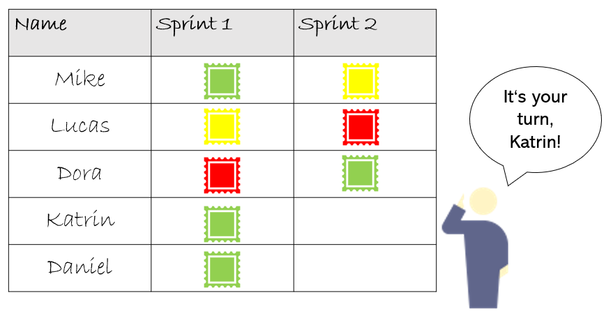
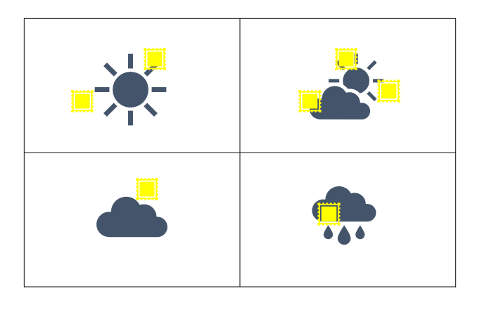

Retrospektive: Intro
Niko Niko
Bei dieser Methode wird der vergangene Sprint wird die Bewertung der Teilnehmer über den vergangenen Sprint visualisiert Auf einer Flipchart mit den eingetragenen Namen der Teilnehmer, wird eingefärbt, wie sich die Teammitglieder während des Sprints gefühlt haben. Dabei werden die Ampelfarben grün, gelb und rot verwendet. Wenn der Teilnehmer sich sehr gut gefühlt hat, klebt man ein grünes Post-It auf ein vorbereitetes Flipchart-Papier, wenn man dem Sprint neutral gegenüber steht, klebt man ein gelbes und wenn man sich während des Sprints schlecht gefühlt hat, klebt man ein rotes Post-it. Man verwendet immer wieder das gleiche Flipchart, so kann man im Laufe der Zeit beobachten, wie sich die Emotionen verändern und Rückschlüsse ziehen, woran Schwankungen liegen können.
Material:
- vorbereitete Flipchart
- Post-its
Dauer: Ca. 3 Minuten, die Teammitglieder sollen bereits beim Betreten des Raumes ihre einschätzung aufkleben
Vorschlag für Teams die Dezentral arbeiten:
In einem Online Dokument eine Tabelle anlegen und von den Teammitgliedern die Zelle in der entsprechenden Farbe einfärben lassen
Wetterbericht
Bei dieser Methode wird der vergangene Sprint anhand der von den Teilnehmern erlebten Emotionen visualisiert. Auf einer Flipchart werden 4 Wetterfenster aufgezeichnet. Beim Eintreten in den Meetingraum werden die Teilnehmer gebeten, ein Post-it auf das Wetter zu kleben, das am ehesten ihrer Stimmung entspricht. Bei dieser Methode benutzt der Scrum Master jede Woche wieder ein leeres Flipchart. Dadurch werden die Teilnehmer nicht durch ihre Stimmung des letzten Sprints beeinflusst. Zudem ist diese Methode anonymer für die Teammitglieder, da keine Stimmung einer Person zugeordnet wird, sondern nur ein Überblick über das Team entsteht.
Material:
- vorbereitetes Flipchart
- Post-its
Dauer:
Ca. 3 Minuten, die Teammitglieder sollen bereits beim Betreten des Raumes ihre Einschätzung aufkleben.